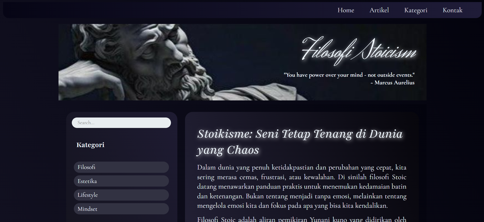
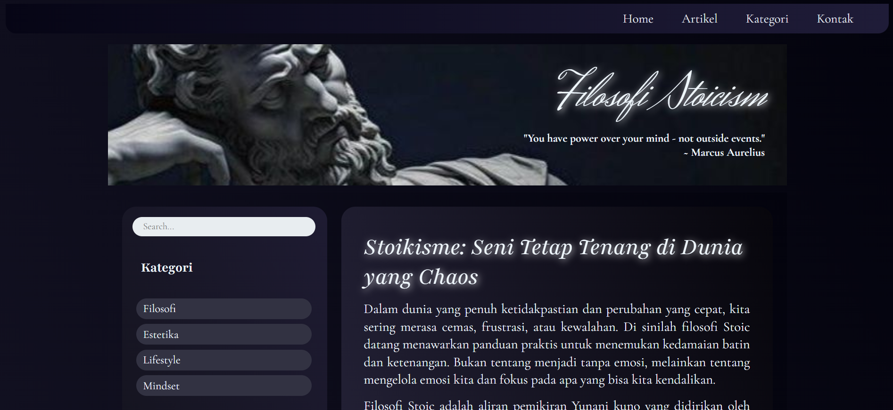
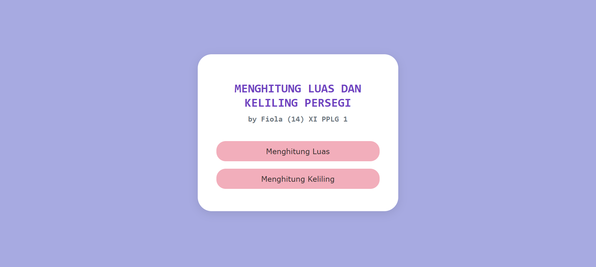

Simple Frontend (Class Project)
A basic frontend I built for a school project — my very first step into web design.
Still learning, still building, still vibing.
I’m a 16yo software engineering student who fell in love with the world of tech — especially machine learning, AI, and web development. Currently exploring Python, HTML, CSS, JavaScript, Java, and SQL.
Not perfect, but they’re mine.
A basic frontend I built for a school project — my very first step into web design.
My first JavaScript project — a basic calculator made to calculate square area & perimeter.
A simple futuristic running game built with Construct 2.
A short memory game made with Construct 2 to sharpen the player’s focus.
Just a fun side project I made after being inspired by my friend :) Made with HTML, CSS, & JavaScript.
I have more small projects with Python, and one day will make more cool projects in the future! Just wait I'll update it ;)
My biggest dream right now is to become an AI Engineer. That’s why I’m currently focusing on mastering Python. I believe that nothing is impossible as long as we keep trying, and that hard work never betrays the results. So whatever your dream is right now, keep working toward it — even if you think it’s too far out of reach :)
My mom has always told me since I was little, “You have to be able to earn your own money.” That mindset has been ingrained in me ever since. In this one life I have, I want to become the person I dreamed of as a child — someone cool, with a luxurious house, a fancy car, and all that. But to me, the essence of success isn’t just about having a big house or an expensive car. It’s about reaching true peace and freedom. So, what’s the definition of freedom? It’s when you can sleep peacefully, eat your favorite food, laugh with your family, and enjoy your hobbies without any pressure or overthinking.
For me, art is therapy. I love paintings. My favorite painters are Vincent Van Gogh
and Claude Monet. And... yeah, I love impressionist paintings. A painting is not
judged by how realistic it is — I think art is more than that. Painting is an
expression of the soul. Each painting has its own "feel".
I also have an artistic side. In my free time, I
usually draw characters that I like, or just random drawings.
Fun fact: I like drawing, but I don't like coloring.
Wanna see my drawings?
My music taste revolves around artists with a strong and distinctive vibe. I’m drawn
to dark Alt-R&B (like The Weeknd, Brent Faiyaz, Clara La San) and moody electronic
sounds such as Dream Pop and Synthwave (Grimes, Pastel Ghost). I love music that feels
emotional and unique — from the soulful melancholy of Daniel Caesar, Avenoir, Montell
Fish to the smooth, timeless jazz of Sade. I also enjoy classical pieces like Chopin’s
Nocturne Op. 9 No. 2 and Debussy’s Clair de Lune.
There are still MANY of my favorite songs and singers, you can see them on my Spotify account.